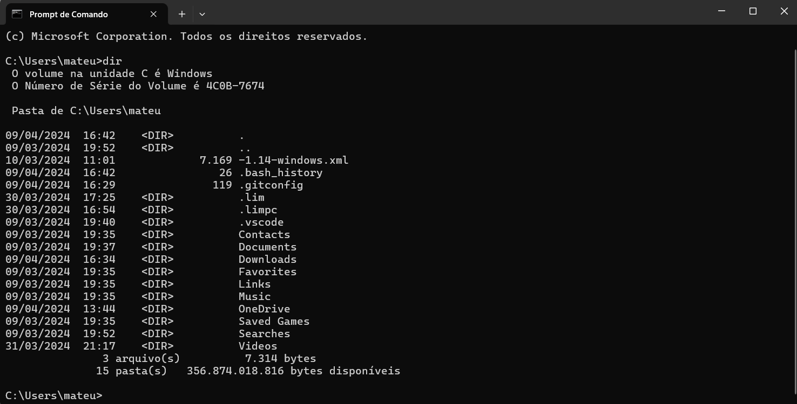
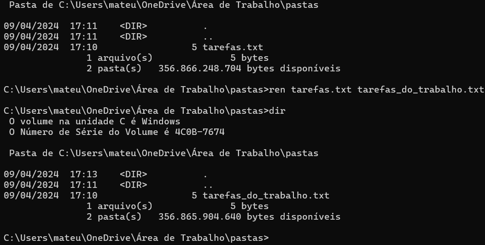

O cmd apresenta uma interface de linha de comando baseada em texto
para realizar operações como navegar por pastas, copiar ou mover arquivos,
executar aplicativos e personalizar as configurações do sistema — tudo por comandos de texto.
Comandos do CMD
DIR
O comando DIR mostra todos os arquivos e pastas na pasta atual
REN
O comando REN é utilizado para mudar o nome de um arquivo especifico
